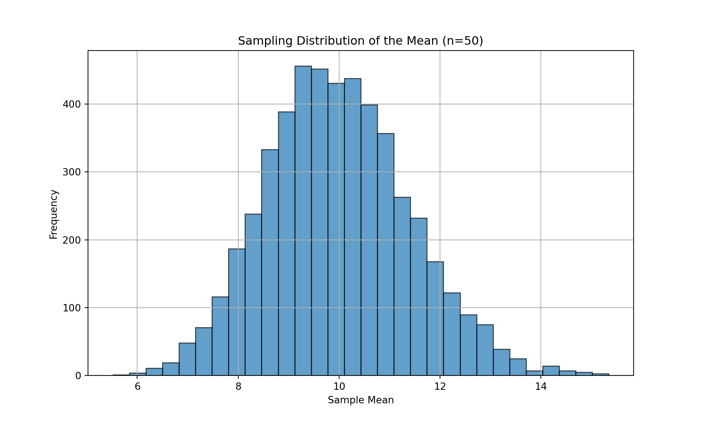

import numpy as np
import matplotlib.pyplot as plt
# Set the random seed for reproducibility
np.random.seed(42)
# a) Simulate a population of 100,000 data points from Exponential distribution with mean 10
population_size = 100000
population_mean = 10
population = np.random.exponential(scale=population_mean, size=population_size)Solutions Tutorial 2
The Nature of Statistics and Parameters
A parameter is a numerical value that describes a characteristic of an entire population. A statistic is a numerical value that describes a characteristic of a sample. The reason a parameter is considered a fixed value and a statistic is a random variable lies in how they are derived.
Parameter (Fixed): A parameter is a single, true value. If we could measure the entire population, we would calculate this one value, and it would not change. It’s often unknown in practice (because measuring an entire population is impractical), but it is conceptually a fixed constant.
Statistic (Random Variable): A statistic is calculated from a subset of the population (a sample). The value of the statistic depends entirely on which specific individuals end up in that random sample. If you were to draw a different random sample, you would get different individuals and thus a different calculated value for the statistic. This variability from sample to sample is what makes a statistic a random variable.
Illustration with Average Height:
Parameter: The average height of all citizens in a country. There is only one such value. If we could line up every single citizen and measure their height, the average we compute would be the true population mean, \(\mu\). This number is fixed.
Statistic: The average height of a randomly selected sample of 1,000 citizens.
- Imagine we take our first sample of 1,000 people and calculate their average height, \(\bar{x}_1 = 175.4\) cm.
- Now, we discard that sample and draw a new, different random sample of 1,000 people. Maybe this sample, by chance, includes slightly taller people. We calculate their average height and get \(\bar{x}_2 = 176.1\) cm.
- If we repeat this process again, we might get \(\bar{x}_3 = 175.1\) cm.
The sample mean, \(\bar{x}\), is not fixed. Its value changes depending on the random sample drawn. Therefore, it is a random variable.
Constructing an Exact Sampling Distribution
Given the population [10, 20, 30, 40, 50].
Calculate the true population mean, \(\mu\). The population mean is the average of all values in the population. \[ \mu = \frac{10 + 20 + 30 + 40 + 50}{5} = \frac{150}{5} = 30 \]
List all possible unique samples of size n=2 without replacement.
There are “5 choose 2” = 10 possible unique samples: 1. (10, 20) 2. (10, 30) 3. (10, 40) 4. (10, 50) 5. (20, 30) 6. (20, 40) 7. (20, 50) 8. (30, 40) 9. (30, 50) 10. (40, 50)
- Calculate the sample mean (\(\bar{x}\)) for each of these possible samples.
mean(10, 20) = 15mean(10, 30) = 20mean(10, 40) = 25mean(10, 50) = 30mean(20, 30) = 25mean(20, 40) = 30mean(20, 50) = 35mean(30, 40) = 35mean(30, 50) = 40mean(40, 50) = 45
- Present this distribution as a frequency table. This list of all possible sample means constitutes the exact sampling distribution of the sample mean.
| Sample Mean (\(\bar{x}\)) | Frequency |
|---|---|
| 15 | 1 |
| 20 | 1 |
| 25 | 2 |
| 30 | 2 |
| 35 | 2 |
| 40 | 1 |
| 45 | 1 |
| Total | 10 |
- Is the mean of this sampling distribution equal to the true population mean? Let’s calculate the mean of the sampling distribution (the average of all possible sample means): \[ \text{Mean of } \bar{x} = \frac{15(1) + 20(1) + 25(2) + 30(2) + 35(2) + 40(1) + 45(1)}{10} \] \[ = \frac{15 + 20 + 50 + 60 + 70 + 40 + 45}{10} = \frac{300}{10} = 30 \]
Yes, the mean of the sampling distribution (30) is exactly equal to the true population mean (\(\mu=30\)) calculated in part (a). This demonstrates that the sample mean is an unbiased estimator of the population mean.
Simulating a Sampling Distribution
This exercise involves simulating a sampling distribution from a highly skewed Exponential population.
- Simulate a population A large population of 100,000 data points is drawn from an Exponential distribution with a mean (\(\mu\)) of 10. A histogram of this population data would be highly right-skewed, with most values clustered near zero and a long tail extending to the right.
- Draw 5,000 different random samples From this skewed population, we draw 5,000 separate random samples, each containing
n=50observations.
# b) Draw 5,000 different random samples, each with n=50 observations
num_samples = 5000
sample_size = 50
samples = [np.random.choice(population, size=sample_size, replace=False) for _ in range(num_samples)]- For each sample, calculate its sample mean We compute the mean for each of the 5,000 samples, resulting in a list of 5,000 sample means.
# c) Calculate the sample mean for each sample
sample_means = [np.mean(sample) for sample in samples]- Plot a histogram of the 5,000 sample means (While a plot cannot be displayed here, we can describe the result).
# d) Plot a histogram of the 5,000 sample means
plt.figure(figsize=(10, 6))
plt.hist(sample_means, bins=30, edgecolor='black', alpha=0.7)
plt.title('Sampling Distribution of the Mean (n=50)')
plt.xlabel('Sample Mean')
plt.ylabel('Frequency')
plt.grid(True)
plt.show()
# Print some statistics
print(f"Population mean: {population_mean}")Population mean: 10print(f"Mean of sample means: {np.mean(sample_means):.2f}")Mean of sample means: 9.97print(f"Standard deviation of sample means: {np.std(sample_means, ddof=1):.2f}")Standard deviation of sample means: 1.42- Describe the shape of the histogram of sample means.
Even though the original population has a highly skewed Exponential distribution, the histogram of the 5,000 sample means will look like a Normal distribution. It will be bell-shaped, symmetric, and centered around the true population mean of 10.
This is a direct consequence of the Central Limit Theorem (CLT), which states that for a sufficiently large sample size (n=50 is large enough), the sampling distribution of the sample mean will be approximately normal, regardless of the shape of the original population distribution.
Applying the CLT Conceptually
Given a right-skewed population distribution of package weights with a true mean \(\mu = 8\) kg and a true standard deviation \(\sigma = 5\) kg. A random sample of n=100 is taken.
- According to the Central Limit Theorem, what can you say about the shape of the sampling distribution of the sample mean weight (\(\bar{x}\))?
Because the sample size n=100 is large (well above the common threshold of 30), the Central Limit Theorem applies. Therefore, the sampling distribution of the sample mean (\(\bar{x}\)) will be approximately Normal, despite the population itself being right-skewed.
- What will be the theoretical mean of this sampling distribution?
The mean of the sampling distribution of the sample mean is always equal to the population mean. \[ \text{Mean}(\bar{x}) = \mu = 8 \text{ kg} \]
- What will be the theoretical standard deviation of this sampling distribution (i.e., the standard error)?
The standard deviation of the sampling distribution is called the standard error (SE) and is calculated as \(\sigma / \sqrt{n}\). \[ SE = \frac{\sigma}{\sqrt{n}} = \frac{5}{\sqrt{100}} = \frac{5}{10} = 0.5 \text{ kg} \]
Verifying the CLT in Python/R/Stata
Using the simulation from the Exponential population with true mean \(\mu=10\), true standard deviation \(\sigma=10\), and sample size n=50.
- From the list of 5,000 sample means you generated, calculate the empirical mean and the empirical standard deviation.
import numpy as np
# Set the random seed for reproducibility (same as before)
np.random.seed(42)
# Parameters
population_mean = 10 # μ
population_std = 10 # σ (for Exponential distribution, σ = μ)
sample_size = 50
num_samples = 5000
# Sample means
samples = [np.random.choice(population, size=sample_size, replace=False) for _ in range(num_samples)]
sample_means = [np.mean(sample) for sample in samples]
# a) Calculate empirical mean and standard deviation of sample means
empirical_mean = np.mean(sample_means)
empirical_std = np.std(sample_means, ddof=1) # Using ddof=1 for sample standard deviation
print(f"{empirical_mean:.3f}")9.945print(f"{empirical_std:.3f}")1.388- According to the CLT, what should the theoretical mean of the sampling distribution be?
The theoretical mean of the sampling distribution is the population mean, \(\mu=10\).
- According to the CLT, what should the theoretical standard deviation of the sampling distribution (the standard error) be?
theoretical_se = population_std / np.sqrt(sample_size)
print(f"{theoretical_se:.3f}")1.414The theoretical standard error (SE) is \(\sigma / \sqrt{n}\). \[ \text{Theoretical SE} = \frac{\sigma}{\sqrt{n}} = \frac{10}{\sqrt{50}} \approx \frac{10}{7.071} \approx 1.414 \]
- Compare the empirical results from part (a) with the theoretical results from parts (b) and (c). Are they close?
Yes, they’re almost equal. This comparison demonstrates how a simulation can empirically verify the predictions of the Central Limit Theorem.
Formulating Hypotheses
- Scenario A: Water Consumption
A city’s water department wants to know if the average daily water consumption per household has changed from last year’s average of 350 gallons.
Hypotheses:
- \(H_0: \mu = 350\) (The mean consumption has not changed).
- \(H_A: \mu \neq 350\) (The mean consumption has changed).
Test Type: Two-sided test.
Justification: The keyword is “changed,” which does not specify a direction (increase or decrease). The department is interested in detecting a significant change in either direction.
Scenario B: New Drug
A pharmaceutical company wants to test if a new drug is effective, meaning it reduces blood pressure compared to a placebo.
Hypotheses:
- \(H_0: \mu \ge \mu_{\text{placebo}}\) (The drug does not reduce blood pressure; it has no effect or makes it worse).
- \(H_A: \mu < \mu_{\text{placebo}}\) (The drug is effective; it reduces blood pressure).
Test Type: One-sided test (specifically, a left-tailed test).
Justification: The company is only interested in proving that the drug reduces blood pressure. An outcome where the drug increases blood pressure would lead to the same conclusion as “no effect”: the drug is not marketed. The research question has a clear direction.
Scenario C: Website Design
An online retailer wants to know if a new website design has a different conversion rate than the old design’s rate of 15%.
- Hypotheses:
- \(H_0: p = 0.15\) (The new design’s conversion rate is the same as the old one).
- \(H_A: p \neq 0.15\) (The new design’s conversion rate is different).
- Test Type: Two-sided test.
- Justification: The keyword is “different.” The retailer wants to know if the new design has any impact on the conversion rate, whether it’s an improvement (p > 0.15) or a detriment (p < 0.15). Both outcomes are important for their business decision.
Interpretation and Calculation
Given: n=36, \(\bar{x} = 48.5\) MPG, \(\sigma = 6\) MPG, \(\mu_0 = 50\) MPG, \(\alpha = 0.05\). Test if the true mean is less than 50 MPG.
- State the null (\(H_0\)) and alternative (\(H_A\)) hypotheses for this test.
- Null Hypothesis (\(H_0\)): The manufacturer’s claim is true. \(H_0: \mu = 50\)
- Alternative Hypothesis (\(H_A\)): The manufacturer’s claim is overstated (the true mean is lower). \(H_A: \mu < 50\)
Calculate the standard error of the sample mean. The standard error (SE) is \(\sigma / \sqrt{n}\). \[ SE = \frac{6}{\sqrt{36}} = \frac{6}{6} = 1.0 \text{ MPG} \]
Calculate the Z-test statistic.
The Z-statistic measures how many standard errors the sample mean is from the hypothesized population mean. \[ Z = \frac{\bar{x} - \mu_0}{SE} = \frac{48.5 - 50}{1.0} = -1.5 \]
Using your Z-statistic, find the corresponding p-value. Since this is a left-tailed test (\(H_A: \mu < 50\)), the p-value is the area under the standard normal curve to the left of Z = -1.5. Using a Z-table or statistical software, we find: \[ p\text{-value} = P(Z \le -1.5) \approx 0.0668 \]
Based on your p-value and the significance level of \(\alpha=0.05\), what is your conclusion?
We compare the p-value to the significance level \(\alpha\). * p-value (0.0668) > \(\alpha\) (0.05)
Since the p-value is greater than the significance level, we fail to reject the null hypothesis.
Conclusion: At the 5% significance level, there is insufficient statistical evidence to conclude that the true mean fuel efficiency of the new hybrid model is less than 50 MPG. The consumer watchdog group does not have strong enough evidence to refute the manufacturer’s claim.
Performing a Hypothesis Test
Use the WAGE2.DTA dataset. Import it in R/Python/Stata. Conduct a hypothesis test on the IQ variable. The null hypothesis is that mu_0 = 100.
import pandas as pd
import numpy as np
np.random.seed(42)
data = pd.read_stata("../datafiles/WAGE2.DTA")
mu_0 = 100- Calculate the standard error and the Z-test statistic in Python.
sigma = np.std(data['IQ'])
n = len(data['IQ'])
se = sigma / np.sqrt(n)
sample_mean = np.mean(data['IQ'])
z = (sample_mean - mu_0) / se- The p-value for a two-tailed test is the area under the standard normal curve that is more extreme (on both sides) than your calculated Z-statistic. Use
scipy.stats.norm.cdf()orpnorm()to find this p-value.
from scipy.stats import norm
p_value = (1 - norm.cdf(z)) + norm.cdf(-z)
print(f"The p-value is: {p_value:.3f}")The p-value is: 0.009Meaning we reject the null hypothesis that the average IQ in the population is 100.
Correct Interpretation
Given a 95% confidence interval for average study hours: [12.5, 15.0].
The correct interpretation is Statement 2.
Statement 2 (Correct): “We are 95% confident that the method we used to generate this interval captures the true average study time for all students at the university.”
Explanation: This statement is correct because it properly places the “confidence” (which is related to probability) on the method, not on the true parameter. The true population mean (\(\mu\)) is a fixed, unknown number. It does not vary. What is random is our sampling process. If we were to repeat our sampling procedure 100 times, we would generate 100 different confidence intervals. The “95% confidence” means we expect about 95 of those 100 intervals to successfully “capture” or contain the true, fixed population mean. Our specific interval, [12.5, 15.0], is just one of those results.
Statement 1 (Incorrect): “There is a 95% probability that the true average study time for all students at the university is between 12.5 and 15.0 hours.”
Explanation of Error: This statement is a very common misinterpretation. It incorrectly implies that the true mean \(\mu\) is a random variable that has a 95% chance of falling within our calculated interval. But \(\mu\) is fixed. Once we have calculated our interval [12.5, 15.0], the true mean \(\mu\) is either inside this specific range or it is not. The probability is either 1 or 0, we just don’t know which. The 95% refers to the long-run success rate of the procedure used to create the interval.
Factors Affecting Interval Width
The width of a confidence interval is determined by the Margin of Error: Width = 2 * (Critical Value) * (Standard Error).
- Increasing the confidence level from 90% to 99%.
This will make the confidence interval wider. To be more confident that you have captured the true mean, you need to use a larger critical value (e.g., Z for 99% is ~2.576 vs. ~1.645 for 90%). A larger critical value increases the margin of error, thus widening the interval. Think of it as needing a wider net to be more sure of catching the fish.
- Increasing the sample size from 100 to 400.
This will make the confidence interval narrower. The sample size (n) is in the denominator of the standard error (\(\sigma/\sqrt{n}\)). Increasing n decreases the standard error. A smaller standard error results in a smaller margin of error and a more precise, narrower interval. More data provides a more accurate estimate.
- The sample having a larger standard deviation.
This will make the confidence interval wider. The standard deviation (\(\sigma\)) is in the numerator of the standard error. A larger standard deviation indicates that the data points in the population are more spread out and variable. This increased variability leads to a larger standard error, a larger margin of error, and thus a wider interval to account for the greater uncertainty.
Constructing a Confidence Interval
Given: n=36, \(\bar{x} = 48.5\) MPG, \(\sigma = 6\) MPG.
- Calculate a 95% confidence interval for the true mean fuel efficiency.
Here is a Python script demonstrating the calculation:
import numpy as np
from scipy.stats import norm
# Given data
x_bar = 48.5 # Sample mean
sigma = 6 # Population standard deviation
n = 36 # Sample size
confidence_level = 0.95
# 1. Point estimate is the sample mean
point_estimate = x_bar
# 2. Calculate the standard error
standard_error = sigma / np.sqrt(n)
# 3. Find the critical Z-value for a 95% CI
# We need to leave (1 - 0.95)/2 = 0.025 in each tail.
# So we look for the Z-value at the 0.975 percentile.
critical_value = norm.ppf(1 - (1 - confidence_level) / 2) # Equivalent to norm.ppf(0.975)
# 4. Calculate the margin of error
margin_of_error = critical_value * standard_error
# 5. Construct the interval
lower_bound = point_estimate - margin_of_error
upper_bound = point_estimate + margin_of_error
print(f"Point Estimate: {point_estimate}")Point Estimate: 48.5print(f"Standard Error: {standard_error:.2f}")Standard Error: 1.00print(f"Critical Z-value: {critical_value:.3f}")Critical Z-value: 1.960print(f"Margin of Error: {margin_of_error:.3f}")Margin of Error: 1.960print(f"95% Confidence Interval: [{lower_bound:.3f}, {upper_bound:.3f}]")95% Confidence Interval: [46.540, 50.460]- Now, calculate a 99% confidence interval using the same data.
We only need to change the confidence level and find the new critical value.
critical_value = norm.ppf(0.995)
margin_of_error = critical_value * standard_error
lower_bound = x_bar - margin_of_error
upper_bound = x_bar + margin_of_error
print(f"Critical Z-value: {critical_value:.3f}")Critical Z-value: 2.576print(f"Margin of Error: {margin_of_error:.3f}")Margin of Error: 2.576print(f"95% Confidence Interval: [{lower_bound:.3f},{upper_bound:.3f}]")95% Confidence Interval: [45.924,51.076]As expected, the 99% confidence interval is wider than the 95% confidence interval. This is because we require a wider range to be more confident that it contains the true population mean.